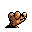

#248
Sandile
GroundDark
It hides beneath hot desert sand to stay warm Only its eyes and nose remain above the sandy surface
Base stats Total 257
HP50
Attack72
Defense35
Speed65
Special35
Details
- Species
- Sand Croc
- Height
- 2'04"
- Weight
- 33.5 lb
- Catch rate
- 180
- Base exp
- 58
- Growth
- Medium Slow
Level-up moves
LevelMoveType
StartRageNormal
StartLeerNormal
StartSand-AttackNormal
Lv 6Sand-AttackNormal
Lv 12BiteDark
Lv 18HeadbuttNormal
Lv 24DigGround
Lv 30CrunchDark
Lv 36EarthquakeGround
Lv 42ThrashNormal
TM / HM
TM04 CrunchTM06 ToxicTM08 Body SlamTM09 Take DownTM10 Double-EdgeTM26 EarthquakeTM27 FissureTM28 DigTM31 MimicTM32 Double TeamTM34 BideTM40 Sludge BombTM44 RestTM48 Rock SlideTM50 SubstituteHM01 Cut